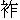

人人盡說清閒好，誰肯逢閒閒此身？
不是逢閒閒不得，清閒豈是等閒人？
則今且說個「閒」字，是「門」字中著個「月」字。你看那一輪明月，只見他忙忙的穿窗入戶，那天上清光不動，卻是冷淡無心。人學得他，便是鬧中取靜，纔算得真閒。有的說：「人生在世，忙一半，閒一半。」假如日裡做事是忙，夜間睡去便是閒了。卻不知日裡忙忙做事的，精神散亂．晝之所思，夜之所夢，連睡去的魂魄，都是忙的，那得清閒自在？古時有個仙長，姓莊，名周，睡去夢中化為蝴蝶，栩栩而飛，其意甚樂。醒將轉來，還只認做蝴蝶化身。只為他胸中無事，逍遙灑落，故有此夢。世上多少渴睡漢，怎不見第二個人夢為蝴蝶？可見夢睡中也分個閒忙在。且莫論閒忙，一入了名利關，連睡也討不得足意。所以古詩云：
朝臣待漏五更寒，鐵甲將軍夜度關。
山寺日高僧未起，算來名利不如閒。
《心相篇》有云：「上牀便睡，定是高人；支枕無眠，必非閒客。」如今人名利關心，上了牀，千思萬想，那得便睡？比及睡去，忽然又驚醒將來。儘有一般昏昏沉沉，以晝為夜，睡個沒了歇的，多因酒色過度，四肢困倦；或因愁緒牽纏，心神濁亂所致。總來不得睡趣，不是睡的樂境。
則今且說第一個睡中得趣的，無過陳摶先生。怎見得？有詩為證：昏昏黑黑睡中天，無暑無寒也沒年。彭祖壽經八百歲，不比陳摶一覺眠。
俗說陳摶一覺，睡了八百年。按陳摶壽止一百十八歲，雖說是尸解為仙去了，也沒有一睡八百年之理。此是諢話，只是說他睡時多，醒時少。他曾兩隱名山，四辭朝命，終身不近女色，不親人事，所以步步清閒。則他這睡，也是仙家伏氣之法，非他人所能學也。說話的，你道他隱在那兩處的名山？辭那四朝的君命？有詩為證：紛紛五代戰塵囂，轉眼唐周又宋朝。多少彩禽投籠罩，雲中仙鶴不能招。
話說陳摶先生，表字圖南，別號扶搖子，毫州真源人氏。生長五六歲，還不會說話，人都叫他「啞孩兒」。一日，在水邊游戲，遇一婦人，身穿青色之衣，自稱毛女。將陳摶抱去山中，飲以瓊漿，陳摶便會說話，自覺心竅開爽。毛女將書一冊，投他懷內，又贈以詩云：
藥苗不滿笥，又更上危巔。
回指歸去路，相將入翠煙。
陳摶回到家中，忽然念這四句詩出來，父母大驚！問道：「這四句詩，誰教你的？」陳摶說其緣故，就懷中取出書來看時，乃是一本《周易》。陳摶便能成誦，就曉得八卦的大意。自此無書不覽，只這本《周易》，坐臥不離。又愛讀《黃庭》、《老子》諸書，灑然有出世之志。十八歲上，父母雙亡。便把家財拋散，分贈親族鄉黨。自只攜一石鐺，往本縣隱山居住。夢見毛女授以煉形歸氣、煉氣歸神、煉神歸虛之法，遂奉而行之，足跡不入城市。梁唐士大夫慕陳先生之名，如活神仙，求一見而不可得。有造謁者，先生輒側臥，不與交接。人見他鼾睡不起，嘆息而去。
後唐明宗皇帝長興年間，聞其高尚之名，御筆親書丹詔，遣官招之。使者絡繹不絕，先生違不得聖旨，只得隨使者取路到洛陽帝都，謁見天子，長揖不拜，滿朝文武失色，明宗全不嗔怪。御手相攙，錦墩賜坐，說道：「勞苦先生遠來，朕今得睹清光，三生之幸。」陳摶答道：「山野鄙夫，自比朽木，無用於世。過蒙陛下採錄，有負聖意，乞賜放歸，以全野性。」明宗道：「既荷先生不棄而來，朕正欲侍教，豈可輕去？」陳摶不應，閉目睡去了。明宗嘆道：「此高士也，朕不可以常禮待之。」乃送至禮賢賓館，飲食供帳甚設。先生一無所用，早晚只在個蒲團上打坐。明宗屢次駕幸禮賢館，有時值他睡臥，不敢驚醒而去。明宗心知其為異人，愈加敬重，欲授以大官，陳摶那裡肯就。
有丞相馮道奏道：「臣聞：『七情莫甚於愛慾，六欲莫甚於男女。』方今冬天雨雪之際，陳摶獨坐蒲團，必然寒冷。陛下差一使命，將嘉醞一樽賜之；妙選美女三人，前去與他侑酒暖足。他若飲其酒，留其女，何愁他不受官爵矣！」明宗從其言，於宮中選二八女子三人，美麗無比，裝束華整，更自動人；又將尚方美醞一樽，遣內侍宣賜。內侍口傳皇命道：「官家見天氣奇冷，特賜美醞消遣；又賜美女與先生暖足，先生萬勿推辭。」只見陳摶欣然對使開樽，一飲而盡；送來美人，也不推辭。內侍入宮復命，明宗龍顏大悅。次日，早朝已畢，明宗即差馮丞相親詣禮賢館，請陳摶入朝見駕。只等來時，加官授爵。馮丞相領了聖旨，上馬前去。你道請得來，請不來？正是：
神龍不貪香餌，彩鳳不入雕籠。
馮丞相到禮賢賓館看時，只見三個美女，閉在一間空室之中，已不見了陳摶。問那美女道：「陳先生那裡去了？」美女答道：「陳先生自飲了御酒，便向蒲團睡去。妾等候至五更方醒。他說：『勞你們辛苦一夜，無物相贈。』乃題詩一首，教妾收留，回復天子。遂閉妾等於此室，飄然出門而去，不知何往。」馮丞相引著三個美人，回朝見駕。明宗取詩看之，詩曰：
雪為肌體玉為腮，多謝君王送得來。
處士不興巫峽夢，空煩神女下陽臺。
明宗讀罷書，嘆息不已。差人四下尋訪陳摶蹤跡，直到隱山舊居，並無影響。不在話下。
卻說陳摶這一去，直走到均州武當山。原來這山初名太岳，又喚做太和山，有二十七峰，三十六巖，二十四澗。是真武修道、白日昇天之處。後人謂：「此山非真武，不足以當之。」更名武當山。陳摶至武當山，隱於九石巖。忽一日，有五個白鬚老叟來問《周易》八卦之義。陳摶與之剖晰微理，因見其顏如紅玉，亦問以導養之方。五老告之以蟄法。怎喚做蟄法？凡寒冬時令，天氣伏藏，龜蛇之類，皆蟄而不食。當初，有一人因牀腳損壞，偶取一龜支之。後十年移牀，其龜尚活，此乃服氣所致。陳摶得此蟄法，遂能辟谷。或一睡數月不起。若沒有這蟄法，睡夢中腹中饑餓，腸鳴起來，也要醒了。陳摶在武當山住了二十餘年，壽已七十餘歲。忽一日，五老又來，對陳摶說道：「吾等五人，乃日月池中五龍也。此地非先生所棲，吾等受先生講誨之益，當送先生到一個好所在去。」令陳傳：「閉目休開！」五老翼之而行。覺兩足騰空，耳邊惟聞風雨之聲。頃刻間，腳跟著地，開眼看時，不見了五老，但見空中五條龍夭矯而逝。陳摶看那去處，乃西岳太華山石上，已不知來了多少路，此乃神龍變化之妙。陳摶遂留居於此。太華山道士見其所居沒有鍋灶，心中甚異，悄地察之。更無他事，惟鼾睡而已。一日，陳摶下九石巖，數月不歸。道土疑他往別處去了。後於柴房中，忽見一物，近前看之，乃先生也。正不知幾時睡在那裡的！搬柴的堆積在上，直待燒柴將盡，方纔看見。又一日，有個樵夫在山下割草，見山凹裡一個尸骸，塵埃起寸。樵夫心中憐憫，欲取而埋之。提起來看時，卻認得是陳摶先生。樵夫道：「好個陳摶先生，不知如何死在這裡？」只見先生把腰一伸，睜開雙眼，說道：「正睡得快活，何人攪醒我來？」樵夫大笑。
華陰令王睦，親到華山求見先生。至九石巖，見光光一片石頭，絕無半間茅舍。乃問道：「先生寢止在於何所？」陳摶大笑，吟詩一首答之，詩曰：
蓬山高處是吾宮，出即凌風跨曉風。
臺榭不將金鎖閉，來時自有白雲封。
王睦要與他伐木建庵，先生固辭不要。此周世宗顯德年間事也。這四句詩直達帝聽，世宗知其高士，召而見之，問以國

長短。陳摶說出四句，道是：「好塊木頭，茂盛無賽。若要長久，添重寶蓋。」世宗皇帝本姓柴、名榮，木頭茂盛，正合姓名。又有「長久」二字，只道是佳兆，卻不知趙太祖代周為帝，國號宋，「木」字添蓋乃是「宋」字。宋朝享國長久，先生已預知矣。且說世宗要加陳摶以極品之爵，陳摶不願，堅請還山。世宗採其「來時自有白雲封」之句，賜號「白雲先生」。後因陳橋兵變，趙太祖披了黃袍，即了帝位。先生適乘驢到華陰縣，聞知此事，在驢背上拍掌大笑。有人問道：「先生笑甚麼？」先生道：「你們眾百姓造化，造化！天下是今日定了。」原來後唐未年間，契丹兵起，百姓紛紛避亂。先生在路上閒步，看見一婦人，挑著一個竹籃而走，籃內兩頭坐兩個孩子。先生口吟二句，道是：「莫言皇帝少，皇帝上擔挑。」你道那兩個孩子是誰？那大的便是宋太祖趙匡胤，那小的便是宋太宗趙匡義，這婦人便是杜太后。先生二十五六年前，便識透宋朝的真命天子了。
又一日，先生游長安市上，遇趙匡胤兄弟和趙普，共是三人，在酒肆飲酒。先生亦入肆沽飲，看見趙普坐於二趙之右，先生將趙普推下去道：「你不過是紫微垣邊一個小小星兒，如何敢佔在上位？」趙匡胤奇其言。有認得的，指道：「這是白雲先生陳摶。」匡胤就問前程之事。陳摶道：「你弟兄兩個的星，比他大得多哩！」匡胤自此自負。後來定了天下，屢次差官迎取陳摶入朝，陳摶不肯。後來趙太祖手詔促之，陳摶向使者說道：「創業之君，必須尊崇體貌，以示天下，我等以山野廢人，入見天子，若下拜，則違吾性；若不下拜，則褻其體。是以不敢奉詔。」乃於詔書之尾，寫四句附奏，云：「九重天詔，休教丹鳳銜來：一片野心，已被白雲留住。」使者復命，太祖笑而置之。
後太祖晏駕，太宗皇帝即位，念酒肆中之舊，召與相見，說過待以不臣之禮。又賜御詩云：
曾向前朝號白雲，後來消息杳無聞。
如今若肯隨徵召，總把三峰乞與君。
先生見詩，乃服華陽巾、布袍、草履，來到東京。見太宗於便殿，只是長揖道：「山野廢人，與世隔絕，不習跪拜，望陛下優容之。」太宗賜坐，問以修養之道。陳摶對道：「天子以天下為一身，假令白日昇天，竟何益於百姓？今君明臣良，興化勤政，功德被乎八荒，榮名流於萬世。修煉之道，無出於此。」太宗點頭稱善，愈加敬重。問道：「先生心中，有何所欲？可為朕言之。」陳摶答道：「臣無所欲，只願求一靜室。」乃賜居於建隆道觀。
其時太宗正用兵征伐河東，遣人問先生勝負消息。先生在使者掌中，寫一「休」字，太宗見之不樂。因軍馬已發，不曾停止。再遣人問先生時，但見他閉目而睡， 之聲，直達戶外。明日去看，仍復如此。一連睡了三個月，不曾起身。河東軍將，果然無功而返。太宗正當嗟嘆，忽見陳摶道冠野服，逍遙而來，直上金鑾寶殿。太宗見其不召自來，甚以為異。陳摶道：「老夫今日還山，特來辭駕。」太宗聞言，如有所失，欲加摶以帝師之號，筑宮奉事，時時請教。陳摶固辭求去，呈詩一首。詩云：
草澤吾皇詔，圖南摶姓陳。
三峰千載客，四海一閒人。
世態從來薄，詩情自得真。
乞全獐鹿性，何處不稱臣？
又道：「二十年之後，老夫再來候見聖顏。」太宗知不可留，特賜御宴於都堂，使宰相、兩禁官員俱侍坐，每人制送行詩一首，以寵其歸。又將太華全山，御筆判與陳摶為修真之所，他人不得侵漁。賜號為「白雲洞主希夷先生」，聽其還山。此太平興國元年事也。
到端拱五年，太宗皇帝管二十年的乾坤，尚不曾立得太子。長子楚王元佐，因九月九日不曾預得御宴，縱火燒宮。太宗大怒，廢為庶人。心愛第三子襄王元侃，未知他福分如何，口中不言，心下思想：「惟有希夷先生陳摶，最善相人。當初在酒肆中，就相定我兄弟二人當為皇帝，趙普為宰相。如今得他一來，決斷其事便好。」轉念猶未了，內侍報道：「有太華山處士陳摶，叩宮門求見。」太宗大驚，即時宣進，問道：「先生此來何意？」陳摶答道：「老夫知陛下胸中有疑，特來決之。」太宗大笑道：「朕固疑先生有前知之術，今果然也。朕東宮未定，有襄王元侃，寬仁慈愛，有帝王之度，但不知福分如何，煩先生到襄府一看。」陳摶領命，纔到襄府門首便回。太宗問道：「朕煩先生到襄府看襄王之相，如何不去而回？」陳摶道：「老夫已看過了。襄府門前，奉役奔走之人都有將相之福，何必見襄王哉？」太宗之意遂決。即日宣詔，立襄王為太子，後來真宗皇帝就是。陳摶在京師，又住了一月。忽然辭去，仍歸九石巖。
其時，有門人穆伯長、種放等百餘人，皆築室於華山之下，朝夕聽講。惟有五龍蟄法，先生未嘗授人。忽一日，遣門人輩於張超谷口、高巖之上，鑿一石室。門人不敢違命。室既鑿成，先生同門人往觀之。其巖最高，望下雲煙如翠。先生指道：「此毛女所謂『相將入翠煙』也，吾其歸於此乎？」言末畢，屈膝而坐，揮門人使去。右手支頤，閉目而逝，年一百一十八歲。門人環守其尸，至七日，容色如生，肢體溫軟，異香撲鼻。乃制為石匣盛之，仍用石蓋；束以鐵鎖數丈，置於石室。門人方去，其巖自崩，遂成陡絕之勢。有五色雲，封住谷口，彌月不散。後人因名其處為希夷峽。
到徽宗宣和年間，有閩中道士徐知常，來游華山。見峽上有鐵鎖垂下，知常攀緣而上，至於石室。見匣蓋欹側，啟而觀之，惟有仙骨一具，其色紅潤，香氣逼人。知常再拜畢，為整其蓋，復攀緣而下。其時徐知常得幸於徽宗，官拜左街道錄，將此事奏知天子。天子差知常賫御香一注，重到希夷峽，要取仙骨供養在大內。來到峽邊，已不見有鐵鎖，但見雲霧重重，危巖壁立，嘆息而返。至今希夷先生蛻骨在張超谷，無復有人見之者矣！有詩為證：
從來處士竊名浮，誰似希夷閒到頭？
兩隱名山供笑傲，四辭朝命肯淹留。
五龍蟄法前人少，八卦神機後學求。
片片白雲迷峽鎖，石牀高臥足千秋。
本章完!